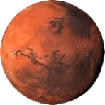
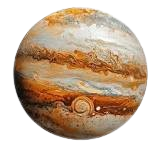
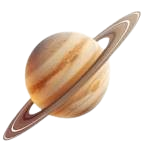

بِسْمِ اللَّهِ الرَّحْمَنِ الرَّحِيمِ
﴿ إِذْ قَالَ يُوسُفُ لِأَبِيهِ يَا أَبَتِ إِنِّي رَأَيْتُ أَحَدَ عَشَرَ كَوْكَباً وَالشَّمْسَ وَالْقَمَرَ رَأَيْتُهُمْ لِي سَاجِدِينَ ﴾
صدق الله العظيم
We have mapped only a fraction of what exists beyond our world. Every number is an invitation to ask another question.
PLANETS IN OUR SOLAR SYSTEM
YEARS OF OBSERVABLE TIME
STARS IN THE MILKY WAY
QUESTIONS STILL OPEN
Start close. Then go further. Choose a path into the archive.
Explore the worlds orbiting our Sun — from rocky surfaces to colossal gas giants.
EXPLORE WORLDS →Follow humanity's journey beyond Earth, from the first steps to the edge of the solar system.
VIEW MISSIONS →Trace distant stars, strange galaxies, stellar explosions, and places we are only beginning to understand.
ENTER DEEP SPACE →Eight worlds. Eight stories. One extraordinary system.


The largest planet in our solar system, ruled by storms that outlive generations.
EXPLORE →
A giant wrapped in ice, dust, and one of the most recognizable silhouettes in space.
EXPLORE →Curious bits of information from across our solar system and beyond.